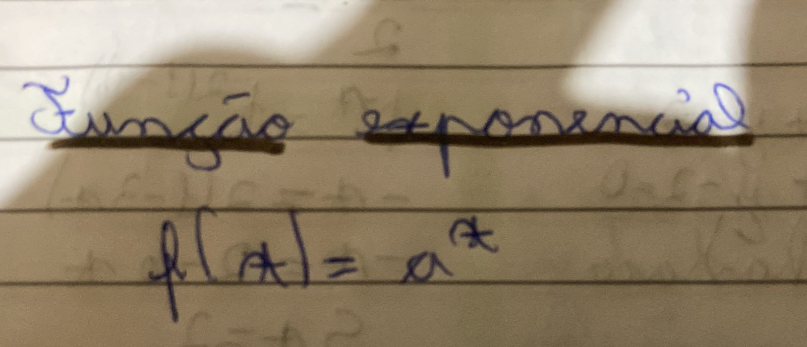

A função exponencial é comumente usada para se analisar o crescimento/decrescimento de determinada população, depreciação de um produto, juros entre outras aplicações.
Como fazer os gráficos?
1- Analisar se a curva será crescente ou decrescente a partir da base.
1.2- Crescente= a > 1
1.3- Decrescente= 0 < a < 1
2- Encontrar pontos na curva, atribuindo valores a x. Sugere-se usar -2, -1, 0, 1, 2 e se necessário mais pontos.
Há diversos tipos de função exponecial, demonstrei os que achei mais práticos.